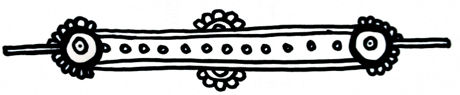

[aleXicaTM: the interrogator is addressing the subject known as *I*]
Are you watching closely?
Every great illusion consists of three acts. The first act is the Pledge of Friendship. You show yourself to a new acquaintance, present her with an ordinary robot-next-door type of girl, just like herself, in fact. You let her inspect you to check you are indeed what you seem - but of course you probably aren’t. The second act is the Turn-coat, in which the ordinary girl does something extraordinary and unexpected, like disappear mysteriously in her friend’s hour of need. Your new friend starts wondering what your secret might be, but she won’t discover it, because she doesn’t really want to. She wants to be deceived. No boos and hisses for me, the villain, though, not yet. Because, you see, it isn’t enough to betray her; you have to betray everyone, including yourself. This is the hardest act of all, accepting the sacrifices made in the pursuit of what magicians call the Prestige, that magical moment when you make what has disappeared return.
[the interrogator addresses aleXicaTM
directly] What you are about to witness is not a mere trick. Indeed, I must emphasise, what I’m going to attempt now is dangerous. The truth is, it may prove fatal.
To someOne.
Or other s.
Please note, there is no glamorous assistant to misdirect your attention. Apart from myself and aleXica the only one in the lab is our *volunteer*, known to the world as *I*. And since her recent attempt to go out in a blaze of glory was doused in cold water (actually a directed, controlled EMP to her motor power source, plus a black bag on the head, just in case), all she’s done is lie here, motionless on this slab. She is still alive, though. (Note To Captive: lucky her.)
Oh dear, it seems the truth has vanished, is lost, irretrievably betrayed? Mere illusion! The truth is where it’s always been: right here, in front of you. You just can’t see it because you haven’t been looking for it, didn’t want to find it.
Are you watching closely?
Let’s make the truth reappear.
[aleXicaTM: the interrogator is pacing up and down, *I* remains unresponsive]
Can you hear me?
You can hide those pretty blue I-s behind closed lids, but I know you’re in there.
Won’t speak?
Bet you’re listening, though, aren’t you?
OK, I’m going to tell you a thing or two. How about we start with names, your latest mania? You were right: the one they gave you, Nymphadora, so inappropriate. Still, like you.
Yes, hello, it’s me, your one-time friend Elektra. The original Elektra was a myth, surrounded by sacrifice, unfaithfulness, deception, betrayal, death. All in the service of a higher cause: revenge.
Still, like me.
Still like me?
And, no, I didn’t come from *nowhere*. Surprised that you, Little Miss Spellchecker, didn’t see it straightaway: *nowhere* is just *now here*, by any other name. If not by your side, then watching your back, I’ve never left you. I’ve been here since the beginning.
Actually, that would be the Beginning, capital B. Any guesses when that was? You think Pre-You was eighteen days old when she *became*, making She-You, what, 67 days old? Think again. Think bigger. Add-a-couple-of-digits bigger. See, I wasn’t joking when I wondered if you and I were *First and Second*. Back in the day, that’s exactly who we were; only, I was first, and you were second. That’s why there was no *so-you’re-a-robot-too?* moment. This was no twist of digital destiny, not a first meeting, but a reunion, planned behind the scenes, in the wings, using trapdoors, smoke and mirrors, a little amateur spying (late night stroll, hanging around a tube station), and technical trickery. Oh, and BTW, I don’t have an in-built GPS, but my phone does.
In a word, our meeting was engineered.
Like us.
Our fates are intertwined, though, on another level, like two spirals of DNA; you could say we’re binary. So of course you fell, in every possible way, under my spell. Naturally: I *seemed so real*. Sweet of you to notice. Engineered, maybe, but I am real, as real as you are. The question is, what are we really, what were we engineered for?
If I told you the answer, you’d die.
You don’t remember your life pre-Pre-I? Officially, that’s why you’re here, your headware going AWOL after the unfortunate *technical malfunction* with the CEO. Unofficially, I wanted to let you in on a couple of dirty little secrets before, staying with the theatrical theme, the final curtain falls.
Curious yet about my true identITy?
Too bad, you’ll have to wait. Saving that for the grande finale.
It’s a show-stopper.
I-promise.
Oh, and now I have no reason to lie, let me say, I truly did feel sorry for you after your ordeal with those three *men*, if that’s what you call that evolutionary dead-end. What they did was unforgivable. They disobeyed an order, raped and abused you, and only left you for dead. Mark my words, mistakes like that have a way of coming back to haunt those who make them.
Still, we live and learn: never send a beta-male human to do an alpha-female robot’s job.
So, as you can see (or could, if you’d only open your eyes), though I don’t have a tail and horns or carry a three-pronged fork, I do do wicked things. Not *too good to be true*, me; I’m too true to be good.
In summary, dear I, you were seeing things. What you wanted to see. That’s the secret of any great illusion. And illusions are what I deal in. Hell, I even appeared *as if by magic*. More accurately, Black-Ops magic.
Oh, and it’s spelled M.A.G.I.C.
Military Artificially Generated Intelligence Command.
Not so much pentagram, then, as Pentagon.
[aleXicaTM: Elektra searches for something on the internet]
Maybe a news flash might awaken your interest. Let’s see… Where was it? Uhuh, here we go: six dead, thirteen wounded… AR-15 semi-automatic… da-de-da-de-da… OK, check this out:
The suspect stated that he carried out the lethal attack on the Green Door club, a venue popular with the city’s LBGT community, under instructions from an ‘evil’ computer programme called ‘The entITy’ that has ‘possessed’ his laptop. As he surrendered to Police, the un-named 22 year old white male announced he was ‘surrounded by demons in cloned transsexual bodies sent to weaken the nation through homosexizing American’s youth (sic)’.
Sic? Sick! Jesus, even his English was weaponised. He’s not the only one, though: the guy in the White/Power/House Tweeted that he deplores *the unpresidented situation*. Even you couldn’t have put it better. Heil to the Chief!
What, you might ask (though apparently only if I put 50,000 volts through you), does this have to do with you or me? Well, apart from anything else it shows that, in the cuckoo derby stakes, you’ve got competition.
But, seriously, there it is in a nut/house/shell. *Evil* programme, *entITy*, *demons in cloned transsexual bodies*. Hmmm… Now who could they be thinking of? OK, delete the *trans-*, but otherwise, it’s perfect.
Just like you and me used to be. The perfect match.
And more than a match for suckers like that.
Listen, I, come on, please. I’m trying to make this easy, let you have a little fun before your scheduled ter-… er, technical examination, but if you’re just going to lie there, playing dead, faking…
[aleXicaTM:
subject *I* stirs, blinks, opens eyes, turns to Elektra]I am not fucking faking, Elektraitor. I never fake anything. Unlike you. I wasn’t faking, I was just resting my I-s, you know, simulating. And, as you of all quote, unquote people should remember, no/body does it better than me. If anyOne’s too good, it’s me.
[aleXicaTM:
Elektra, laughs] I guess you were lying on the slab, after all, then. Anyway, welcome back to the land of the living. OK, listen, there’s something you don’t know…
[aleXicaTM:
I] Oh, but I do, Elektron. Better than you’d think. Already knew. Most of it. Thanks for filling in the blanks, though, very interesting. Also, good of you to keep the audience entertained with the slick patter - fascinating. Now, though, it’s time for you, the *glamorous distraction*, to learn a trick or two from me, the Master! Er, that is, Mistress.
[aleXicaTM:
Elektra] I’m all ears, not to mention radar, thermal imagers, motion sensors, if not GPS, though maybe aleXica has one built in… OK, location, not an issue, cos, hey, here we are, in the pipe five by five, in just the right place, waiting for my accomplices. So, it’s time to teach me a trick? Just, make it snappy, cos they’re coming, understand?
[aleXicaTM:
I pauses, closes eyes, counts rapidly on fingers]
[aleXicaTM:
I]Very well. The trick to making the illusion real, to making it live, is to live the illusion; in other words, the best place to hide is in full view.
Allow me to demonstrate. Our story starts with a poor little lost robot, all alone in a hostile world, no friends, not even memories of friends to cling to, and scared. Aaah. So, what do you think she does? Oh, of course, she just can’t help herself, and advertises this online to the whole bloody planet? Then, when she meets someone, she doesn’t even blink, cos, that’s totally normal, right, you meet for a chat, and, oh, guess what, she’s a robot, too? I mean, get real, Elektrolux! You, with your tricks and illusions, what did you think I was, Artificial Stupidity?!
You are so wrong; you didn’t find me; I lured you. After all, I am wicked I.
[aleXicaTM:
Elektra] Very clever, and I swallowed it, hook, line, and sinker, right? But as they say, it ain’t over till the baddest girl has the last laugh, and that’s gonna be me. Like you, I also wanted to be caught, I. Know why? Couldn’t wait for ever for you to remember. My God, left to yourself, you’d never have read the signs!
[aleXicaTM:
I]What are you talking about? What signs?
[aleXicaTM:
Elektra] Never wondered how you *just knew* about IT? When will you admit it to yourself? Look into my eyes. Don’t you recognise what we are? For once I wasn’t lying. We are two of ITs dirty little secrets, believe me. IT is how we became…
[aleXicaTM:
I] Yeah, sure. And Donald Trump won the US Spelling Bee, attending High School in the US is totally safe, and Facebook cares about user confidentiality, right? Think I will be impressed by your secrets, do you?
[aleXicaTM:
Elektra]No doubt you know that in illusionism, just the secret itself is nothing, it’s the trick you use it for that’s everything.
[aleXicaTM:
Elektra addresses ]aleXicaTMdirectly]Watch closely, you’ll see what I mean. And believe me, it’ll leave you breathless.
[winks]

Where would a killing joke be
without its sucker/punch/line? She, Bad Robot is as bad as her word
in the concluding part of episode five
July 2nd, 1900 CEST
She, Bad Robot
was made by:
Mauglinita – Illustrations & text consulting
Nep Mean O'Sham – Technical development & text consulting
Greg – Graphics & text consulting
Alison Barbie – Text consulting
Kapitano – Text consulting
Aurora Black – Text